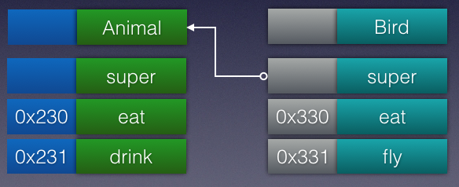

函数派发机制指的是程序如何找到函数并执行操作的机制。各种各样不同的需求导致不同的函数派发机制。有时可能希望函数直接执行，比如C++的默认派发机制，有时可能需要函数在运行时执行，那就需要通过函数表派发，比如java，或者需要通过消息派发，比如Objc。但是每种派发机制都有优缺点。
常见的函数派发
静态派发
静态派发也叫直接派发。在静态派发中，编译器直接找到相关指令的位置。当函数调用时，系统直接跳转到函数的内存地址执行操作。这样的好处就是执行快，同时允许编译器能够执行例如内联等优化。事实上，编译期在编译阶段为了能够获取最大的性能提升，都尽量将函数静态化。
动态派发
动态派发是一种运行时机制。在运行时决定函数的执行。这种机制产生的原因就是面向对象语言的多态性。原先的静态派发由于在编译时就决定了，所以灵活性就不够。
函数表派发
函数表派发就是通过函数表来查找相应的函数地址。每个类在创建时都会创建一个函数表，用来记录函数的指针。同时子类在创建时也会创建一个函数表，如果函数是override的，则使用一个新的指针，用于区分父类中相同函数的指针。如果这个函数是父类中有且没被override的，则存储的就是原先的指针。具体可以看下面的代码和图示。
1 | class Animal { |
当执行Bird类中的eat函数时整个流程如下：
1.读取Bird类的函数表地址Oxb00。
2.读取到eat函数，也就是0xb00+1。
3.跳转到0x330执行具体的操作。

从上面的分析中我们可以知道，要具体执行fly函数，就必须进行两次读取和一次跳转。同时编译器对于函数表派发的函数是无法执行优化的。这样，执行速度必然就变慢了。
消息派发
Objc的函数派发都是基于消息派发的。这种机制极具动态性，既可以通过swizzling修改函数的实现，也可以通过isa-swizzling修改对象。
还是上面那段代码，然后看一下通过消息派发执行Bird中的drink函数的步骤。
1.到自己的方法列表中去找，结果没找到。
2.去它的父类Animal中去找，发现找到了，就执行相应的逻辑。

从中我们可以发现，如果这个方法在NSObject中，那么每次都要找好多次，就会非常慢。解决的方法就是利用方法缓存。如果调用过一次，就会放入缓存列表中，下次再调用的话，就会非常快。
swift中的函数派发
swift中函数派发包含了上述3种情况。总结如下表所示。
| 直接派发 | 函数表派发 | 消息派发 | |
|---|---|---|---|
| 强制声明 | static or final | - | dynamic |
| Class | extensions | 初始声明 | extensions with @objc |
| Protocol | extensions | 初始声明 | - |
| 值类型 | 所有方法 | - | - |
具体的例子可以看如下：
1 | protocol Noisy { |
总的来看，具体的派发机制还是有点绕的。但是我们在选择函数派发机制时有一个原则：
1.如果不需要多态，直接派发优先考虑。
2.如果需要覆写，函数表派发优先考虑。
3.如果需要覆写和对Objective-C可见，那就用消息派发。
小结
本文主要介绍了三种常用的函数派发机制，并介绍总结了swift中的派发机制和选择时的原则。